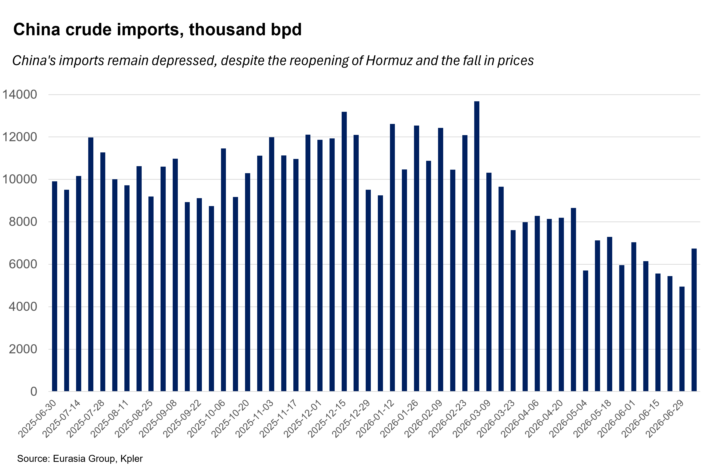
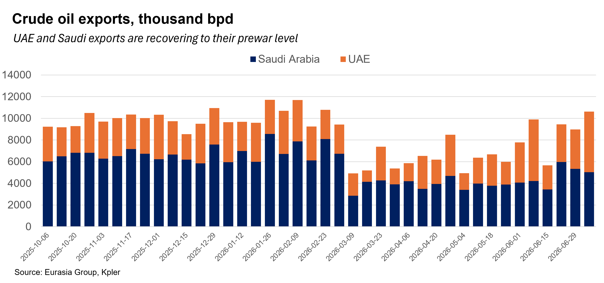
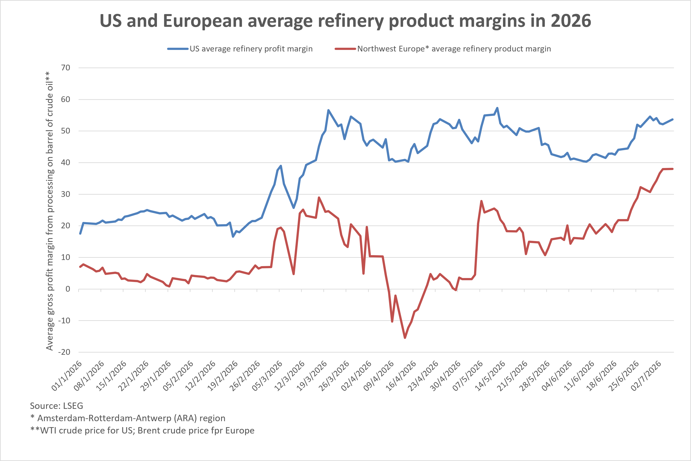

|
 |
|||
|
||||
|
||
Prices will stay low as Middle East producers compete for markets. The UAE, Saudi Arabia, and Iran are all rushing supply to a market that remains constrained by historically low Chinese crude imports. This will keep prices low, likely pushing Brent below $70 per barrel, moving into the lower end of Eurasia Group’s price band for the year (see: Gulf supply flood will keep Brent in $65-80 range in 2026, 26 June 2026).  The nascent Saudi-UAE price war is likely to intensify. Both producers are slashing prices and increasing output as they compete for market share in the aftermath of the war and the UAE’s exit from OPEC (see: Free from OPEC, UAE will pump more oil once Hormuz reopens, 28 April 2026). The price for the UAE’s signature Murban blend of crude oil has fallen to $66 per barrel, while Saudi Arabia has cut its official selling price by a staggering $11, placing it at a discount below the regional average as it tries to compete. Both are also taking advantage of the improved security in the Strait of Hormuz to increase exports, with their combined overall production on track to reach their prewar average of 10 million barrels per day (bpd) by mid-July.  Refiner profits will be high as crude prices fall amid strong demand. Though the price of crude oil has fallen since the war ended, prices for most refined products—especially middle distillates like diesel—remain elevated, which is helping boost the “crack spread,” or refiner’s profit margin. A large crack spread also suggests strong demand, despite some demand destruction while Hormuz remained closed (see: Market stabilization will falter if no deal reached by July, 12 June 2026).  Demining efforts and clarifying Iran’s toll demands will slow a full Hormuz recovery. In line with Eurasia Group’s expectations, traffic through the Strait of Hormuz has increased to a daily average of 30%-50% of prewar volumes (approximately 30-50 ships per day, both inbound and outbound). Growing traffic beyond this figure will require additional time to demine the main waterway, which ships continue to avoid in favor of the southern Omani channel and Iran’s northern route. Iran is also pushing for transit tolls on strait shipping—a position the US, Gulf states, and major international actors have rejected. Recent skirmishing—with Iran attacking at least two ships and threatening others—is likely to keep traffic depressed, until Iran’s role in the strait has been clarified, likely through negotiations with other Gulf countries and especially Oman. OPEC announcement reinforces bearish outlook for prices. The producer group announced another small output increase of 188,000 bpd during its meeting on 5 July, continuing the trend established in 2026 of slowly unwinding formal production cuts (see: OPEC+ likely to persist with cautious production hikes, 3 November 2025). Though largely symbolic, the announcement further supports the view that the oil market will remain well supplied throughout 2026 and into 2027. |